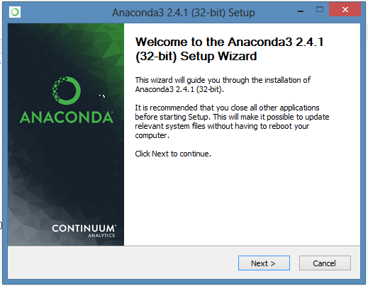

Denne manualen er en introduksjon til Pandas og iPython/Jupyter, beregnet for statistikkdelen av MA-155 ved Universitetet i Agder. Den tar for seg installasjon og oppsett av nødvendige verktøy, samt bruk av disse for å løse relevante oppgaver og problemer i faget.
Programmeringsspråket vi bruker er Python. Det er mye brukt innenfor forskning og dataanalyse, og det er utviklet en rekke programpakker og verktøy innenfor ulike felt. For å gjøre det enklest mulig å komme igang, anbefaler jeg Anaconda. Dette er en samling som inneholder Python, samt Pandas, og en rekke andre pakker for databehandling og matematikk.
Pandas er en pakke for databehandling og matematikk, mens Matplotlib brukes til å tegne grafer. All skriving og kjøring av kode gjøres med Jupyter. Jupyter lar oss kjøre kode, og se resultatet av koden rett i nettleseren i såkalte "notebooks". Disse kan så deles med, og redigeres av andre. Alle notebooks brukt for å lage denne guiden kan lastes ned, og kjøres på egen maskin. Dette er anbefalt, siden du da kan gjøre endringer, og gjenbruke kode til løsing av lignende oppgaver selv.
Selv om hovedfokuset i guiden er på bruk av Jupyter og Pandas, vil vi også bruke pakker som Numpy og Scipy. Numpy danner store deler av grunnlaget for Pandas, men vi kan også bruke denne pakken direkte. Scipy har også en del grei funksjonalitet utover det vi får tilgang til gjennom Pandas.
Alt du trenger for å komme igang er å laste ned og installere Anaconda. Du kan også bruke en eksisterende versjon av Python, hvis du har dette på maskinen allerede. Du må isåfall installere Pandas og Jupyter på egenhånd. Med Anaconda, går alt av seg selv.
Anaconda er tilgjengelig til Windows, Mac OSX og Linux, og installeres som et hvilket som helst annet program på maskinen. Den kommer i en Python 2.7, og 3.x-versjon. Det har tidligere vært et problem med kompatibilitet for noen pakker med 3.x-versjonen. Dette er ikke lenger noe problem, og denne guiden er skrevet primært for Python, siden dette er mest fremtidsrettet.

Når Anaconda er lastet ned, dobbeltklikker du på installasjonsfilen for å starte installasjonen. Du kan trykke "Next" og "I agree", uten å endre noen av valgene under veis. Pass på at "Add Anaconda to my PATH environment variable" er valgt på siste side i installasjonsveiviseren. Du kan gjerne også velge "Register Anaconda as my default Python 3.x", hvis ikke du har andre versjoner av Python på maskinen allerede.
I neste kapittel får du informasjon om hvordan du starter Jupyter, og tester at alle pakkene er installert korrekt.
Laget våren 2016, som prosjektoppgave i MA-155 Statistikk ved UiA av Olav Andreas Lindekleiv